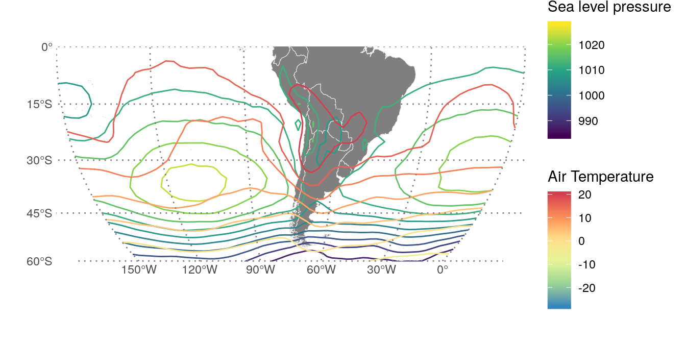

Multiple color (and fill) scales with ggplot2
tl;dr: The functionality shown in this post is now on the ggnewscale package! üì¶. You can find the original code in this gist.
A somewhat common annoyance for some ggplot2 users is the lack of support for multiple colour and fill scales. Perusing StackOverflow you can find many questions relating to this issue:
Unfortunately, this deluge of questions is met with a shortage of conclusive answers, most of them being some variation of “you can’t, but here’s how to hack it or visualise the data differently”.
Recently I came up with a way of tricking ggplot2 into displaying multiple scales. It relies on a recent addition by Claus Wilke that allows the usage of “non standard aesthetics” –scale_color_continuous(aesthetics = "fill") sets a fill scale– and the use of ggplot_add() that I learnt thanks to this post by Hiroaki Yutani.
Now let’s be serious for a moment and acknowledge that using multiple color scales is not for the faint of heart. There’s a very real risk of ending up with a plot with is at best confusing and at worst, misleading. But that doesn’t mean there are not situations that call for this kind of plot. Using very different scales allows you to condense more information in a single plot, letting you visualise more relationships between variables. In the Atmospheric Sciences, for example, plotting temperature and pressure in contour lines with different color scales is a common practice.
But res non verba; this is how it looks like in action (with an example taken from this StackOverlow question)
ggplot(pd[pd$score1 != 0,], aes(x=x, y=species)) +
geom_tile(aes(fill =score1)) +
scale_fill_gradient2("Score 1", limits = c(0, 4),
low = "#762A83", mid = "white", high = "#1B7837") +
new_scale("fill") +
geom_tile(aes(fill = score2), data = subset(pd, score2 != 0)) +
scale_fill_gradient2("Score 2", limits = c(0, 3),
low = "#1B7837", mid = "white", high = "#762A83") +
geom_text(data=pd, aes(label = letters, color = factor(change))) +
scale_color_manual("Change", values = c("black", "#F2A11F"),
labels = c("None", "Some")) +
coord_fixed(ratio = 1.5, xlim=c(0.5,16.5), ylim=c(0.5, 3.5))

How it works
The code is a bit too long and tedious to show in this article, but you can find it on this gist. Here are the important bits.
First, the new_scale() function does nothing.
new_scale <- function(new_aes) {
structure(ggplot2::standardise_aes_names(new_aes), class = "new_aes")
}
It merely returns an object of class new_aes with a character vector with the “new” scales. All the magic is in the + operator. ggplot2 objects are “summed” with ggplot_add() function which allows to define the “add” operation for any arbitrary object to a ggplot. For the case of new_aes object, this is what happens:
ggplot_add.new_aes <- function(object, plot, object_name) {
plot$layers <- lapply(plot$layers, bump_aes, new_aes = object)
plot$scales$scales <- lapply(plot$scales$scales, bump_aes, new_aes = object)
plot$labels <- bump_aes(plot$labels, new_aes = object)
plot
}
It modifies each layer, scale and label and renames the relevant aesthetic to something other than “fill” or “colour”. There’s also a bit of minimally invasive surgery to geoms so that they don’t reject the newly grafted aesthetic. Is somewhat ad-hoc, to be honest, and probably not very robuts, but it works!
There are many other ways to implement this and I went through some iterations. The current implementation is friendly and consistent with the main ggplot2 “adding” idea, but it has some limitations and annoyances that prevent me from being 100% on board with it. I would love to get some feedback from the community ü§û!
A more real-ish example
Why is any of this useful to me, you say? As I wrote before, being able to plot temperature and pressure in the same map with two different scales is very neat.
library(metR)
library(magrittr)
time <- as.POSIXct("1998-01-01")
# Temperature and sea level pressure for January 1st 1998
atmos <- ReadNetCDF("~/DATOS/NCEP Reanalysis/air.mon.mean.nc",
subset = list(level = 850,
time = time)) %>%
.[, slp:= ReadNetCDF("~/DATOS/NCEP Reanalysis/slp.mon.mean.nc",
subset = list(time = time), out = "vector")] %>%
.[, lon := ConvertLongitude(lon)]
ggplot(atmos, aes(lon, lat)) +
geom_world() +
geom_contour(aes(z = slp, color = ..level..), binwidth = 4) +
scale_color_viridis_c("Sea level pressure") +
new_scale_color() + # same as `new_scale("color")`
geom_contour(aes(z = air, color = ..level..), binwidth = 4) +
scale_color_distiller("Air Temperature", palette = "Spectral") +
scale_x_longitude(limits = c(-150, 0)) +
scale_y_latitude(ticks = 15) +
ggalt::coord_proj("+proj=moll +lon_0=-75",
ylim = c(-60, 0), xlim = c(-150, 0))

Visualising the relationship between pressure and temperature is very important for the analysis of the growth of atmospheric perturbations.
Of course, with great power comes great responsibility üï∏. Mixing multiple scales for the same aesthetic should be done sparingly and only if absolutely necessary. First always ask yourself if the same information cannot be shown in a better way.
ggplot2 doesn’t cease to amaze me. Is not only a very powerful package to construct any kind of complex plots in a stupidly simple way, but it’s also exceptionally extensible by allowing this kind of deep user customisation. ¡Long live the ggplo2 ✊!